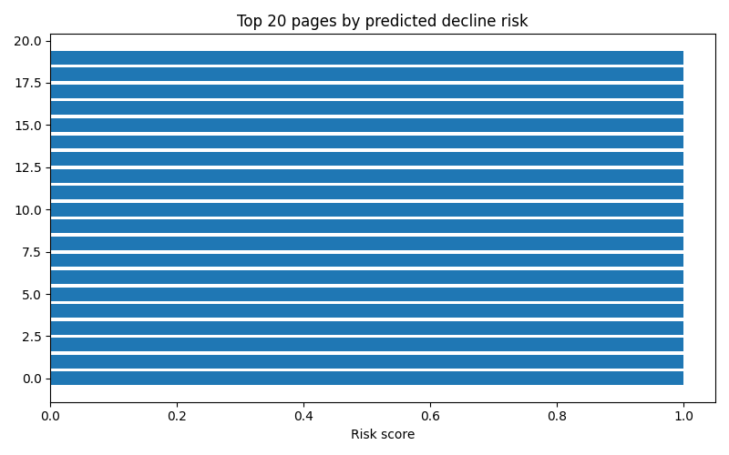

Introduction
Most SEO and content teams accumulate more underperforming pages than they have hours to review. The bottleneck isn't spotting a problem page — it's deciding, out of hundreds of candidates, which one to fix first. A naive answer sorts by raw traffic drop. That answer is wrong often enough to matter: a small decline on a high-intent commercial page can be worth more attention than a large decline on a low-value informational one. The signal that determines priority isn't one column, it's an interaction between several — which is what makes this a modeling problem rather than a spreadsheet sort.
This problem is not hypothetical: the FlyRank internship warehouse itself contains 519,606 content items across dozens of clients, and even in a single development month, tens of thousands of pages carried real, measurable click-through rate gaps relative to their position tier. That volume is exactly the scenario this paper addresses — not a handful of pages a person could review individually, but a portfolio large enough that prioritization itself has to be systematic.
This work treats that prioritization question as a decision-support task: rank pages so a human reviewer with limited capacity spends it on the most promising candidates first, with reasons attached to every recommendation and explicit limits on what the model is and isn't claiming.
Decision, action, cost
The output feeds a content strategist's weekly refresh queue. If the ranking is wrong — flagging a low-impact page as urgent, or missing a high-impact one — the cost is wasted editorial hours on a page that was never going to move, while a page that actually mattered keeps declining, unreviewed.
Data
All modeling uses the FlyRank/internship-warehouse release (build flyrank_pseudonymized_warehouse_release_v20260703), table fact_content_daily_performance, filtered to month=2026-03 as a mid-panel development window. The release's final month is deliberately excluded from every step of development — it is a sealed test window, and touching it early would mean tuning against the future the model is meant to predict.
| Property | Value |
|---|---|
| Grain | one content item × one day × one client |
| Rows in slice | 9,841,378 |
| Date span | 2026-03-01 – 2026-03-31 |
| Rows with GA4 data available | 413,966 (4.2%) |
The grain claim was verified directly: grouping by client, content, and date and checking for any group larger than one row returned zero duplicates. GSC-derived features (impressions, clicks, position) are reliable across nearly the full slice; GA4-derived features (sessions, engagement) are reliable for only the 4.2% of rows where a client's analytics tracking was active, since coverage varies per client.
Methodology
Label
The target is a future-outcome label, not a same-window snapshot: for each client–content pair, clicks in the first half of the month (Mar 1–15) are compared against clicks in the second half (Mar 16–31). A page is labeled declining when later-window clicks fall below earlier-window clicks. Every feature is computed only from the first half — strictly before the point the label is measured.
Features
Four observed, pre-decision-point signals: impressions, clicks, average search position, and click-through rate — all summed or averaged over the March 1–15 window only.
Baseline
Before building any rule, two candidate signals were checked directly against the data rather than assumed:
- Staleness — intended to mirror FlyRank's refresh-flag logic. Verdict: false. The available date range only spans one month, so "days since first seen in this slice" cannot exceed 30 days and does not actually measure content staleness. The signal was dropped rather than built on.
- CTR vs. position — intended to mirror the CTR-fix logic. Verdict: confirmed. Weighted CTR fell clearly as position tier worsened, most sharply past position 20.
The surviving baseline rule scores pages by CTR gap relative to their position-tier median — not the dataset-wide median, which is pulled down hard by a large share of near-zero-click rows and would otherwise flatten almost every page's score to zero.
Model and split design
Logistic regression was compared against random forest. The split is grouped by client (32 train, 8 test, zero client overlap verified) rather than a random row split, since pages from the same client likely share template and traffic patterns — a random split risks a model partly memorizing client-specific quirks instead of learning a generalizable signal.
Leakage audit
The final feature set was checked against a standard leakage checklist: no feature is calculated after the decision point; the feature and label windows do not overlap; no product-decision field was used as a feature; no derived field secretly encodes the target; and the grouped split was confirmed to have zero client overlap between train and test.
Results
On the same client-holdout split, at Precision@50 — of the top 50 pages ranked highest, the share that were genuinely declining:
Both models substantially beat the baseline, but the simpler model won. With only 32 training clients and four features, random forest's added flexibility likely overfit noise that logistic regression's linear boundary avoided — a direct instance of complexity not paying for itself.
What the model leans on
Click-through rate dominates the model's coefficients — more than seven times the weight of the next largest feature. Low CTR is, by a wide margin, the strongest predictor of decline in this slice.
Validation robustness check
The same model was re-run under two split designs: a naive random split, which allows a client's pages to appear on both sides of train/test, and the honest grouped split used everywhere else in this paper.
| Split | Precision@50 |
|---|---|
| Naive random split | 0.62 |
| Grouped client split | 0.72 |
Error pattern
Of the top 20 highest-risk predictions, 15 correctly matched an actual decline. The 5 misses shared a pattern: somewhat higher click volume relative to impressions than the correct predictions around them — suggesting the model may slightly over-weight the raw CTR rate without fully separating "genuinely low CTR" from "low, but still respectable given real click volume."

Limitations
- Trained and validated on a single month from a client subset with uneven GA4 coverage (as low as 4.2% in places); not validated for clients or periods far outside this slice.
- Precision@50 moved meaningfully (0.62 to 0.74) purely from changing the train/test split — with 40 total clients, any single reported number carries real uncertainty.
- Risk scores for the top-ranked pages cluster very close to 1.0 with little internal differentiation (fig. 1) — the model is confident these pages are at risk, but does not finely rank within its own top tier.
- Several top-ranked baseline candidates showed extreme patterns (100,000+ impressions, one click) that plausibly indicate a technical or tracking fault rather than a genuine content problem. This was not resolved and likely carries into the model's queue as well.
- This work produces observed and directional findings, and a decision-support ranking — not causal proof that any specific fix improves rankings, and not a claim about how Google's ranking algorithm behaves.
Ranked Recommendations
Two reason codes drive the queue: high_risk_low_ctr (risk ≥ 0.65, CTR below the dataset median) maps to rewrite title/meta; moderate_risk_review (risk ≥ 0.5) maps to a lighter-touch review and refresh. Everything else is monitor: visible, not flagged this cycle.
Intended use
For a content strategist or SEO lead triaging a limited weekly queue — not for an automated publishing or editing pipeline.
Required human review
Before acting on any flag, confirm the underlying issue is a content or metadata problem and not a technical fault (a broken snippet, a redirect, an indexing failure) — several candidates in this dataset show patterns extreme enough to suggest the latter. Borderline moderate_risk_review calls are also worth a second look, since the dataset-median CTR comparison likely under-flags some genuinely poor performers.
What should never be automated
- Publishing a rewrite without a human reviewing the actual page
- Treating a risk score as a guarantee of decline, given how tightly the top tier clusters near 1.0
- Bulk-editing pages based on score alone, given how much Precision@50 moved between validation splits
- Any claim that this tool predicts Google's ranking algorithm
Monitoring & retrain triggers
Retrain before trusting the queue again if: the portfolio's CTR-vs-position relationship shifts meaningfully; a new client is added with materially different tracking coverage; Precision@50 on a fresh holdout month drops below 0.72; risk scores continue saturating near 1.0 across a growing share of the portfolio; or a known external event (an algorithm update, a site redesign) could invalidate the training period's assumptions.
Reproducibility
Every step in this paper — the data contract, baseline, model, validation audit, and action playbook — is implemented as a standalone, runnable notebook in the project repository. Anyone with repo access can re-run the pipeline from a fresh clone.
| Notebook | Covers |
|---|---|
| w01_research_question.ipynb | Lane, proof statement, decision/action/cost |
| w02_ml_task_framing.ipynb | Task type, target, success metric |
| w03_data_contract.ipynb | Data contract, verification queries, leakage trap |
| w04_baseline_score.ipynb | Signal checks, baseline rule, top-20 review |
| w05_model.ipynb | Model choice, split design, baseline comparison |
| w06_validation_audit.ipynb | Paper methodology critique, split robustness, leakage re-audit |
| w07_action_playbook.ipynb | Ranked queue, reason codes, exports |
| capstone.ipynb | Full synthesis mirroring this paper |
Repository: github.com/him2079/flyrank-ml-internship